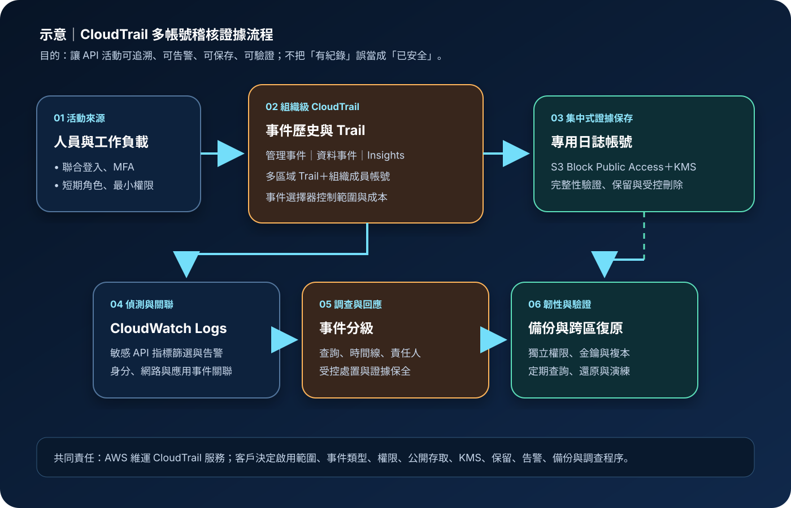

AWS CloudTrail：API 稽核與證據保存
AWS CloudTrail 記錄 AWS 帳號中的 API 與相關活動，協助回答誰在何時、從何處、對哪個資源執行了什麼動作。它是稽核、調查與治理的重要證據來源，但不會自動阻止不當操作，也不能取代應用程式日誌、監控告警、證據保全程序或權限治理。
作者：Dr. William｜查閱與發布：2026-09-07
服務定位
CloudTrail 是 AWS 的活動稽核服務。事件歷史可查詢近期管理事件；Trail 可持續把事件交付至 Amazon S3，並可整合 CloudWatch Logs。CloudTrail Lake 的事件資料存放區則支援事件擷取、保存與 SQL 查詢。組織可建立涵蓋多個成員帳號的組織 Trail 或事件資料存放區，降低各帳號各自設定造成的缺口。
CloudTrail 與 Amazon CloudWatch 的職責不同：CloudTrail 著重 API、主控台登入及帳號活動；CloudWatch 著重指標、日誌、追蹤與運作告警。完整調查通常還要結合身分供應者、網路、作業系統、資料庫與應用程式紀錄。
核心概念
事件與記錄範圍
- 管理事件：記錄對 AWS 資源執行的控制平面操作，可再區分讀取與寫入。
- 資料事件：記錄在資源內部或資源上執行的高頻操作，例如特定 S3 物件或 Lambda 函數活動；通常須明確選取。
- Insights 事件：分析符合條件的管理活動，找出與基準不同的異常 API 呼叫率或錯誤率。
- 網路活動事件：依支援服務記錄透過 VPC Endpoint 發生的 API 活動，適用範圍須查核最新文件。
Trail、Lake 與完整性
- Trail：把選定區域與事件類型持續交付至 S3；多區域 Trail 可降低新區域未納管的風險。
- 組織 Trail：由 AWS Organizations 管理帳號建立並套用至組織成員帳號，適合集中稽核。
- CloudTrail Lake：以事件資料存放區保存、查詢及分析事件，保留與計費模式需獨立設計。
- 日誌檔驗證：摘要檔與雜湊可協助判斷交付後的日誌檔是否遭修改、刪除或新增，但仍需保護驗證資料與保存路徑。
適合與不適合的使用情境
適合
- 追查 IAM、網路、儲存、金鑰、資料庫及其他 AWS 資源的建立、修改與刪除活動。
- 集中保存多帳號 API 活動，支援安全調查、變更追蹤、法遵證據與責任歸屬。
- 對敏感管理操作建立 CloudWatch 指標篩選、告警、事件分級與受控回應。
- 使用 CloudTrail Lake 查詢事件時間線、跨來源活動或歷史趨勢。
不適合或不能單獨完成
- 需要阻止未授權操作時，必須以 IAM、SCP、資源政策、網路控制與適用防護服務執行預防；CloudTrail 主要提供偵測與證據。
- 需要應用交易內容、作業系統程序或封包細節時，CloudTrail 不會自動產生這些遙測。
- 僅依事件歷史作為長期證據保存並不適合；應建立 Trail 或事件資料存放區及明確保留策略。
- 未啟用適用的資料事件時，不能假設 S3 物件、Lambda 呼叫或其他資料平面活動都已留下紀錄。
示意故事案例：多帳號醫療預約平台的稽核證據
以下為架構示意，不代表特定組織或正式部署。一個預約平台把正式、測試、共享服務與日誌保存分置不同 AWS 帳號。管理人員透過聯合登入、MFA 與短期角色操作；工作負載只取得必要權限。組織級多區域 Trail 收集所有成員帳號的管理事件，並針對承載敏感資料的指定資源啟用資料事件。日誌交付至專用日誌帳號中的私有 S3 Bucket，啟用 Block Public Access、適用的 KMS 加密、版本與保留控制，並限制刪除及金鑰管理權限。敏感 API 活動同步到 CloudWatch Logs 形成告警，調查人員以唯讀角色建立時間線。重要證據另依 RPO、RTO 與法規需求備份或跨區複寫，定期執行完整性、查詢與還原演練。

建置與運作流程
- 定義證據需求：列出帳號、區域、資源、事件類型、保留期限、RTO/RPO、調查角色與法規要求。
- 建立集中邊界：以 AWS Organizations 規劃專用日誌帳號；管理、保存、查詢與刪除職責分離。
- 啟用多區域 Trail：收集管理事件並納管新區域；依風險選取資料事件、Insights 與支援的網路活動事件。
- 保護目的地：S3 關閉公開存取，Bucket Policy 僅允許必要交付與讀取；採用適用 KMS 金鑰、版本、保留或 Object Lock 設計。
- 限制身分權限：人員使用聯合登入、MFA 與短期角色；Trail、事件選擇器、目的地及金鑰的變更權限採最小權限。
- 避免敏感資料外洩：請求參數或資源名稱可能進入事件；機密只由 Secrets Manager／Parameter Store 提供，不放入標籤、名稱或可記錄欄位。
- 啟用偵測：把必要事件送至 CloudWatch Logs，對停用稽核、政策變更、異常登入與高風險 API 建立低噪音告警。
- 建立調查流程：定義事件時間線、查詢範本、證據匯出、雜湊驗證、責任人、核准及保全程序。
- 準備韌性：依資料分類建立備份或跨區複寫，確保目的區域的 IAM、KMS、查詢工具與通知可獨立運作。
- 持續驗證：定期模擬敏感操作，確認事件如期交付、告警觸發、日誌不可公開、證據可查詢並可還原。
- 管理成本：檢查 Trail 副本、資料事件量、Lake 擷取與保存、查詢掃描、CloudWatch Logs 及跨區傳輸費用。
成本與可用性考量
CloudTrail 成本取決於使用方式。事件歷史、Trail 管理事件副本、資料事件、Insights、CloudTrail Lake 的擷取與保存、查詢、S3 儲存、CloudWatch Logs、KMS 請求及資料傳輸可能分別計費。資料事件通常量大，應以資源 ARN、事件類型與進階事件選擇器縮小到必要範圍，但不能為省費用而留下關鍵稽核缺口。實際費用需依查閱日定價、區域、保留年限與事件量估算。
CloudTrail 是受管服務，但事件交付、查詢與告警仍可能受設定錯誤、權限、配額、目的地政策、KMS 狀態或區域事件影響。多區域 Trail 可涵蓋多區域活動，不等於證據已在另一區域獨立可用。關鍵環境需測試 S3 保存、跨區複寫或備份、目的區域解密、查詢與通知路徑。
CloudTrail 不應成為唯一事故訊號。CloudWatch 指標與日誌、AWS Config、VPC Flow Logs、應用稽核紀錄及身分供應者事件可補足不同層次。保存越久、來源越多，越需要資料生命週期、查詢範圍與存取審查。
CloudTrail 特有資安風險與控制
- 稽核被停用或範圍遭縮減：攻擊者可能停止記錄、刪除 Trail 或修改事件選擇器。以 SCP 與最小權限限制高風險操作，監控 StopLogging、DeleteTrail、PutEventSelectors 等異動。
- 資料事件缺口：預設管理事件不代表所有資料平面活動都已記錄。依敏感資源與威脅情境明確啟用資料事件，並以測試操作驗證事件存在。
- S3 目的地公開或可刪除：錯誤 Bucket Policy、公開存取或過寬刪除權限會外洩或破壞證據。啟用 Block Public Access，分離交付、讀取與刪除權限，採版本、保留及適用的 Object Lock。
- KMS 金鑰造成洩漏或不可用：過寬解密權限會擴大暴露，停用或刪除金鑰會妨礙調查。限制管理與解密角色，監控政策變更並演練目的區域解密。
- 事件內容帶入敏感資訊：資源名稱、標籤或請求欄位可能被記錄。禁止把機密放進可見欄位，使用 Secrets Manager／Parameter Store，限制查詢與匯出權限。
- 日誌來源被誤判為真實身分：事件中的身分、來源位址與 user agent 需要結合工作階段、代理服務與呼叫鏈判讀。調查時關聯身分供應者、網路與應用紀錄。
- 偽造、竄改或不完整交付：僅看到檔案不代表完整。啟用日誌檔驗證，保護摘要檔與 S3 路徑，定期驗證序列並監控交付錯誤。
- 集中查詢角色權限過大：跨帳號 Lake 或 S3 查詢可能暴露整個組織的活動。使用 MFA、短期角色、資料範圍、職責分離及定期存取審查。
- 網路與公開存取邊界不清：私有工作負載可依支援情況使用受控出口或 VPC Endpoint 存取 API；端點政策、DNS、Security Group 與出口規則只允許必要路徑。
- 高事件量造成成本型阻斷：無邊界資料事件或大範圍 Lake 查詢可能快速增加費用。設定預算、量測基準、查詢限制與異常量告警，同時保留必要證據。
共同責任邊界
AWS 負責 CloudTrail 受管服務及底層雲端基礎設施的安全與可用性。客戶負責決定啟用哪些帳號、區域、事件與資源，並管理 IAM、SCP、Trail、事件資料存放區、S3、KMS、CloudWatch 整合、保留、完整性驗證、告警、備份與調查程序。
客戶仍須落實 IAM 最小權限、管理身分 MFA 與短期憑證、網路隔離與公開存取控制、KMS 加密、Secrets Manager／Parameter Store、CloudTrail／CloudWatch、備份與跨區復原。AWS 提供記錄能力，不代表所有事件已被選取、紀錄必然完整、證據符合組織要求或事故會自動處理。
上線前可執行檢查清單
- □ 所有正式帳號與區域均納入組織級多區域 Trail，新增成員帳號與新區域有自動納管機制。
- □ 管理事件及敏感資源的資料事件已按風險啟用，並以實際測試操作確認可查到預期紀錄。
- □ 人員採聯合登入、MFA 與短期角色；Trail、Lake、S3、KMS、查詢、匯出及刪除權限已分離並採最小權限。
- □ S3 Block Public Access、Bucket Policy、版本、保留與適用的 Object Lock 已完成允許及拒絕測試。
- □ KMS 金鑰政策只允許必要交付與解密；停用、輪替、目的區域解密與復原程序均已演練。
- □ 資源名稱、標籤與事件欄位不含機密；機密由 Secrets Manager／Parameter Store 管理並定期輪替。
- □ CloudWatch 已監控停用記錄、刪除 Trail、事件選擇器、S3／KMS／IAM 政策及高風險 API 異動。
- □ 日誌檔驗證已啟用並定期執行；交付錯誤、事件延遲、缺口與摘要檔異常均有責任人及處置程序。
- □ 重要證據已有符合 RPO/RTO 的備份或跨區複本；目的區域的權限、金鑰、查詢與通知可獨立使用。
- □ Trail、資料事件、Lake、S3、CloudWatch Logs、KMS 與傳輸成本已有基準、預算及異常量告警。
AWS 官方一手來源
- AWS CloudTrail User Guide｜What is AWS CloudTrail?（查閱：2026-09-07）
- How AWS CloudTrail works（查閱：2026-09-07）
- CloudTrail concepts and event types（查閱：2026-09-07）
- Security in AWS CloudTrail（查閱：2026-09-07）
- Security best practices in AWS CloudTrail（查閱：2026-09-07）
- Creating and updating a trail（查閱：2026-09-07）
- AWS CloudTrail pricing（查閱：2026-09-07）
內容說明
本文依查閱日可用的 AWS 官方文件整理，作為基礎學習與架構討論材料；實際部署仍須依區域功能、最新價格與配額、事件量、工作負載測試、組織政策、法規及風險評估調整。